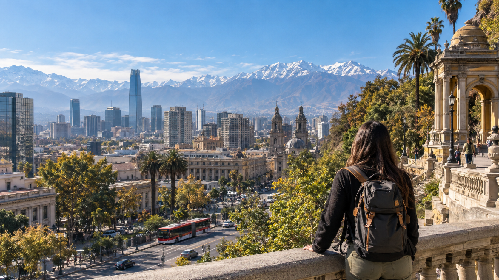

RECOMENDADO
BUS
Bus + Metro
Bus oficial a Pajaritos y luego Línea 1. Buena relación costo / tiempo.
TU PRIMER DÍA, RESUELTO
Desde el aeropuerto hasta el atardecer: transporte, café, cultura y barrio en una ruta fácil de seguir.
Activa la ubicación para encontrar el punto más cercano.

MAPA DE BOLSILLO
ATERRIZA SIN DUDAS
En la salida internacional sigue la línea azul del piso hasta los mesones oficiales. Evita aceptar transporte ofrecido fuera de los módulos.
Bus oficial a Pajaritos y luego Línea 1. Buena relación costo / tiempo.
Compra en el mesón del aeropuerto. Conveniente con equipaje o en grupo.
Tarifa informada antes de salir. Úsalo desde el módulo autorizado.
Clave local: compra una tarjeta bip! en Metro. Integra buses, Metro y Tren Nos y permite hasta dos transbordos dentro de 120 minutos.
UN DÍA BIEN ARMADO
Una secuencia compacta que reduce traslados y deja tiempo para mirar la ciudad, no solo tachar lugares.
Busca una mesa en la calle José Victorino Lastarria y prueba café chileno antes de subir Santa Lucía.
Abrir en mapa ↗El Museo Chileno de Arte Precolombino es una introducción clara y poderosa a las culturas del continente.
Sitio oficial ↗Plaza de Armas, Catedral y calles peatonales. Continúa hacia La Moneda si todavía tienes energía.
Ruta a pie ↗Cruza hacia Bellavista y sube el Cerro San Cristóbal. Revisa la operación del funicular o teleférico antes de ir.
Revisar operación ↗SANTIAGO, BIEN SELECCIONADO
Una selección verificada en Google Maps, con buenas valoraciones y una explicación corta para decidir rápido.
Valoraciones observadas en Google Maps el 23 de septiembre de 2026; pueden cambiar. Toca cada ficha para ver el detalle y abrir Google Maps.
DÓNDE HACER BASE
Elige barrio antes que habitación: define el ritmo de todo el viaje.
Lastarria · Santiago Centro
Para cultura, caminatas y una primera visita muy céntrica.
Ver hotel ↗Providencia · Metro Pedro de Valdivia
Conectado, caminable y práctico para moverse al centro y al oriente.
Ver hotel ↗Vitacura · Parque Bicentenario
Para estadías tranquilas, diseño y restaurantes del sector oriente.
Ver hotel ↗Las recomendaciones son editoriales; precios y disponibilidad cambian. Reserva siempre en el canal oficial.
VIAJA CON CRITERIO
01AeropuertoCompra traslado solo en módulos oficiales.
02En la calleLleva el teléfono guardado al caminar y revisa el mapa antes de salir.
03De nochePrefiere transporte solicitado desde una app o recepción.
04Plan BDescarga mapas sin conexión y guarda la dirección de tu hotel.